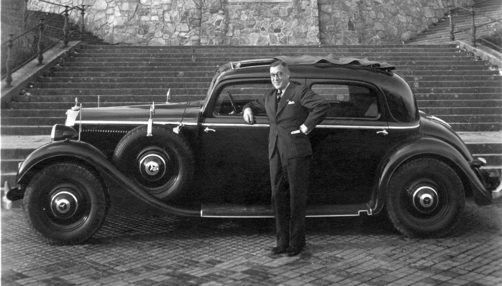
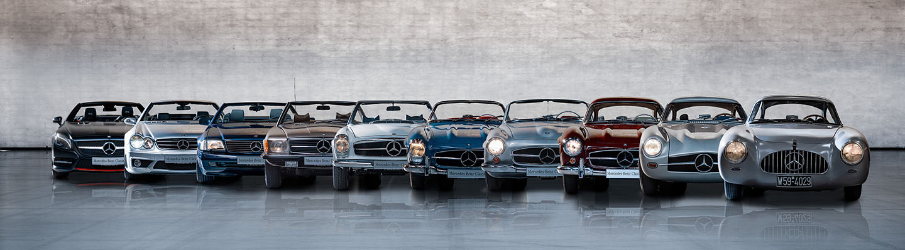

Deutsche
Fachqualität.
Wir bieten Autos für jeden Gebrauch!
Carl Benz entwickelt 1879 seinen ersten stationären Einzylinder-Zweitaktmotor, der am Silvesterabend erstmals läuft und ihm geschäftlichen Erfolg bringt. Dies ermöglicht ihm, 1885 den zweisitzigen Benz Patent-Motorwagen zu bauen, das erste Automobil mit integriertem Fahrgestell und Motor.
Der Wagen verfügt über einen liegend im Heck eingebauten Einzylinder-Viertaktmotor (0,75 PS/0,55 kW), einen Stahlrohrrahmen, ein Differential und drei Drahtspeichenräder. Technische Highlights sind die automatische Einlasssteuerung, eine elektrische Hochspannungszündung und eine Verdampfungskühlung.
Am 29. Januar 1886 meldet Benz das „Fahrzeug mit Gasmotorenbetrieb“ zum Patent an (DRP 37435), das als Geburtsurkunde des Automobils gilt. Im Juli 1886 erfolgt die erste öffentliche Ausfahrt.
Seit Carl Benz´s Erfindung bieten wir Autoklassen für jeden Gebrauch: vom modernen Sportwagen bis zum charismatischen Kleinbus
| Fahrzeugklasse |
Erscheinungsdatum |
| A-Klasse |
1997 |
| B-Klasse |
2005 |
| C-Klasse |
1993 |
| E-Klasse |
1993 |
| G-Klasse |
1979 |
| M-Klasse |
1998 |
| R-KLasse |
2005 |
| S-Klasse |
1965 |
| T-Klasse |
2022 |
| EQC (elektrisch) |
2019 |